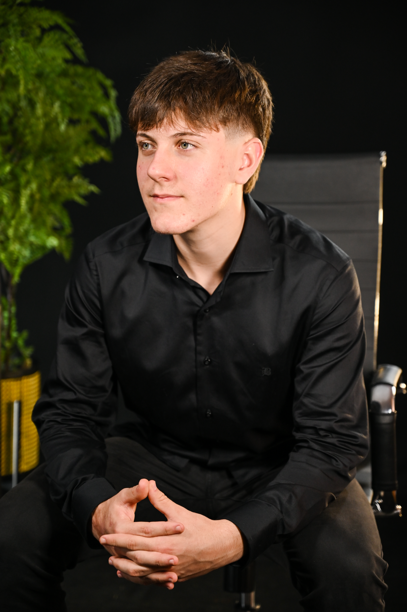

Engenharia de Software
Universidade Tecnológica Federal do Paraná (UTFPR) – Campus Dois Vizinhos
Status: cursando
Estudante de Engenharia de Software | Técnico em Informática

Apaixonado por tecnologia e desenvolvimento de sistemas.
Sou estudante de Engenharia de Software na UTFPR, Campus Dois Vizinhos, e formado como Técnico em Informática pelo IFPR, Campus Avançado Barracão.
Tenho experiência em diversas linguagens de programação, incluindo C, Java e SQL, além de conhecimentos sólidos em hardware.
Localização: Dois Vizinhos, PR
Universidade Tecnológica Federal do Paraná (UTFPR) – Campus Dois Vizinhos
Status: cursando
Instituto Federal do Paraná (IFPR) – Campus Avançado Barracão
Status: concluído
Áreas em que quero aprimorar minhas habilidades e adquirir experiência:
Meu objetivo é construir uma carreira sólida na área de tecnologia, contribuindo para projetos inovadores e soluções eficientes. Estou em busca de estágios ou oportunidades que me permitam crescer profissionalmente e aplicar meus conhecimentos para resolver desafios reais no setor de tecnologia.
Quer conversar sobre estágio ou projetos? Envie uma mensagem pelo formulário ou escreva para lucasponcio@alunos.utfpr.edu.br.